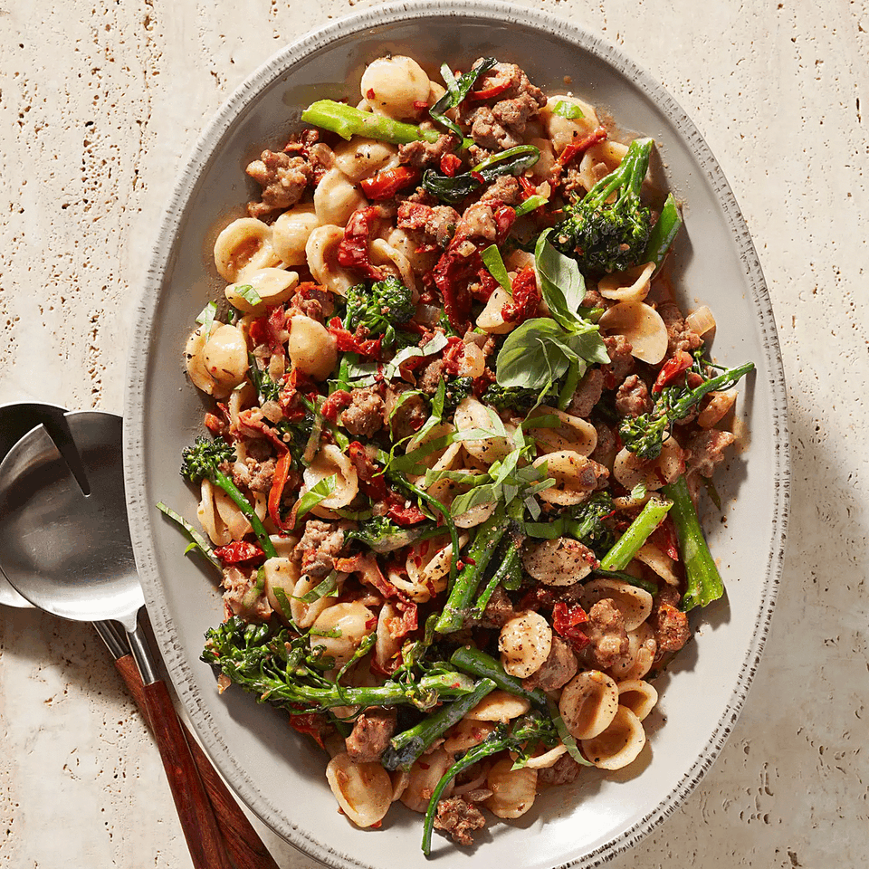

Creamy Orecchiette w/ Hot Sausage, Broccoli, & Sun-Dried Tomatoes

Sausage, broccoli, and sun-dried tomatoes with a creamy white wine sauce, served with orecchiette pasta.
Ingredients
- 1 lb. orecchiette pasta
- 2 tbsp. olive oil
- 1 lb. hot italian sausage, casing removed
- 2 cups broccoli, chopped
- 2 tbsp. garlic, minced
- 1 shallot, diced
- 3/4 cup sun-dried tomatoes, rinsed & chopped
- 3 tbsp. sun-dried tomato paste (optional)
- 1/2 cup dry white wine
- 1/2 cup heavy cream
- 4 cups chicken broth
- salt, black pepper, & red pepper flakes, to taste
- 1/4 cup parmesan cheese
- basil, for garnish
- 1 small baguette
Instructions
- In a large skillet on medium-high heat, add the sausage and cook, stirring to break up the meat, until browned.
- Add the broccoli and shallots, cooking until the broccoli is tender and the shallots are translucent.
- Stir in the sun-dried tomatoes, sun-dried tomato paste, and garlic, cooking for about 1 minute.
- Stir in the wine, cooking and stirring until the liquid is mostly absorbed.
- Add the stock and cook until reduced. Add the cream and reduce heat to low. Season with salt and simmer while cooking the pasta.
- Add the cooked pasta and parmesan cheese to the sauce and stir to coat. Season with salt and pepper. Garnish with black and red pepper.
- Serve with toasted baguette slices.